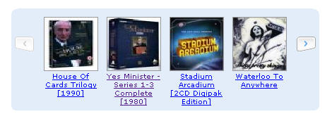

A few weeks ago, a really neat trick appeared on the Kokogiak blog showing how to go about Consuming Amazon's Web API Directly with Javascript (via JSON and XSLT).
I've been looking for a reason to try that technique out ever since then, and had half a mind that I'd like to use the approach to develop some sort of personally hosted bookshelf interface for my Amazon wishlist, as a precursor to trying out the same thing for OU Library new books listings (I was thinking of something along the lines of a homebrew version of the Blogbridge Library interface).
So when the rather neat Carousel component extension to the Yahoo user interface (YUI) tools appeared, I realised the ideal opportunity had arrived.
So much so in fact that I had to take today off as holiday so I could spend some guilt free time tinkering with code;-) And the result?

...or see a demo here: Carousel and Amazon2JSON Wishlist demo
The script at the moment is a bit crude and needs tidying/fully reconciling against the YUI libraries. However, it does demonstrate quite a few things:
One of the main reasons I like this approach is that the solution can be managed completely on the client side. That is, no need for server access (assuning you can pull the necessary YUI files in from somewhere) or browser jiggery pokery trying to get around the browser cross-site XML security policies.
That said, the next demo I have in mind for the carousel component - using it to display new books in the library by consuming the new books feeds - I think I will do on a server. Using Ning, maybe? Then others can play along too even if they don't have access to a server of their own...
Update 14/8/06:: here's another demonstration of using JSON to populate the widget with book covers, a new books carousel. This also adds a reflection of the book cover, which is a neat effect.
Posted by ajh59 at August 2, 2006 05:25 PM